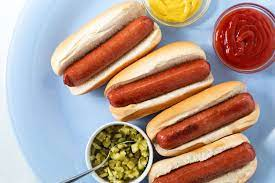

Hotdog

Description
- 1 all-beef hot dog
- 1 poppy seed hot dog bun
Bring a pot of water to a boil over high heat. Reduce heat to low, place hot dog in water, and cook until warmed through, about 5 minutes. Remove hot dog from water and set aside.
Place a steamer basket into the pot and steam poppy seed bun until warm, about 2 minutes.
Place hot dog in steamed bun. Pile on toppings in this order: mustard, relish, onion, tomato, pickle, peppers, and celery salt. The tomato wedges should be nestled between hot dog and top of bun on one side. Place pickle between hot dog and bottom of bun on the other side. Don't even think about ketchup!